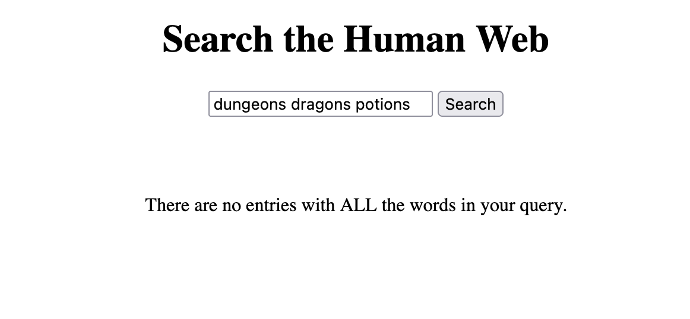

For the last month (since January 6th) I've been working on a search engine for personal websites. I've been documenting most of my development on Github as I go, but it's very removed from my current website. Which is not ideal.
Onto today's updates:
Web Crawler & Indexer
206 status code > I have a function which checks whether a website has a robots.txt file, and sometimes it was claiming a website didn't have one when it did. Turns out some websites were responding to my http request with a status code of 206? 206 is a successful response, but it's partial content, and as far as I understand should only be sent to requests containing a Range header? Anywho, I just modified my status check to include 206 as a successful status:
if resp.StatusCode != 200 && resp.StatusCode != 206 {
// early return
return false, Robots{}
}
// the rest only runs if the server responds with a successful status
repeat robots.txt check > Each time my web crawler visited a URL, before visiting it would check if the hostname had a robots.txt file. This doubled the number of requests I was sending to each server. I implemented a very simple map (Robots object is a representation of a robots.txt file):
robotsMap := make(map[string]Robots)
Now when my web crawler visits a url, it first checks if its robots.txt has already been parsed:
robots, robotsAlreadyParsed := robotsMap[hostname]
If the hostname doesn't have any known robot rules, then it tries to fetch them:
if robotsAlreadyParsed == false {
println("Fetching robots.txt for: " + hostname)
_, robots := getRobots(hostname)
robotsMap[hostname] = robots
}
Now it only checks each hostname once while it is running.
crawldelay on indexer > my web crawler and web indexer are two different services. The web crawler first finds all the websites and puts them all in a queue, and then I can run the indexer any time I want and it will go through the queue and index each page's keywords. But it wasn't following the crawl delay from those page's robots.txt files, so I implemented something very similar to what I just described above.
hostdelays = {}
if hostname not in hostdelays:
rp = txtrobots.RobotFileParser()
rp.set_url("https://" + hostname + "/robots.txt")
rp.read()
delay = rp.crawl_delay("*")
if delay:
hostdelays[hostname] = float(delay)
else:
hostdelays[hostname] = 3 # default delay
print(f"waiting: {hostdelays[hostname]} seconds")
time.sleep(hostdelays[hostname])
API
exclusive search > Previously when you searched something on the interface, it would return all pages where any of those words are mentioned at least once. I assumed that when making a multi-word query, the pages which have the most of those words would rank highest. I was wrong. When searching "hello there" the top page didn't contain the word "there".
I changed to search to work closer to how google scholar works, where it only returns the pages that include all the words in the query. I will need to modify the interface in some way to communicate that's how the search works, but this change should make the search slightly more precise.
Interface
no results > Speaking of a more exclusive search, the interface used to display nothing when no results were found. Now it displays a short message explaining no results were found:
if (results.length == 0) {
searchResultsList.innerHTML = `<p>There are no entries with ALL the words in your query.</p>`
}
Here's a screenshot:
